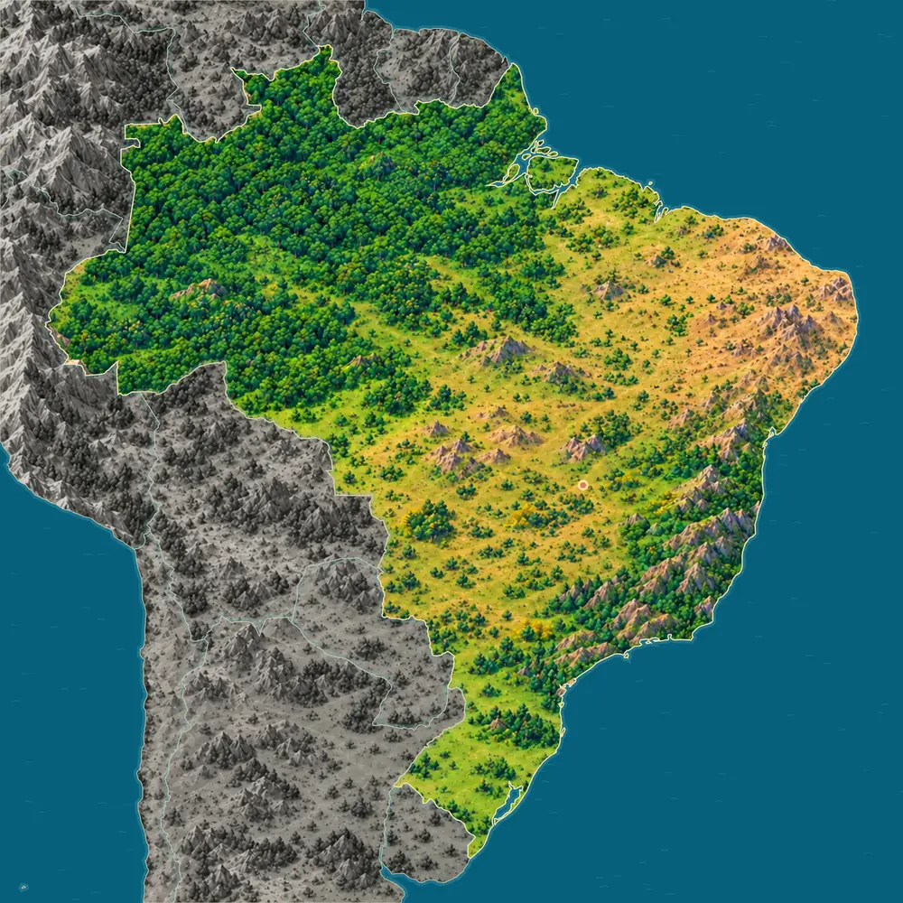
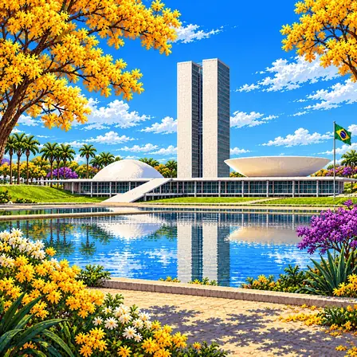
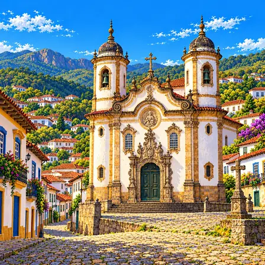
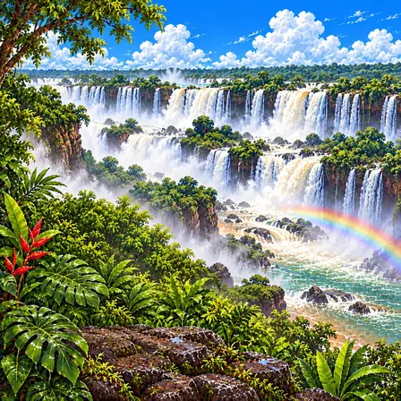
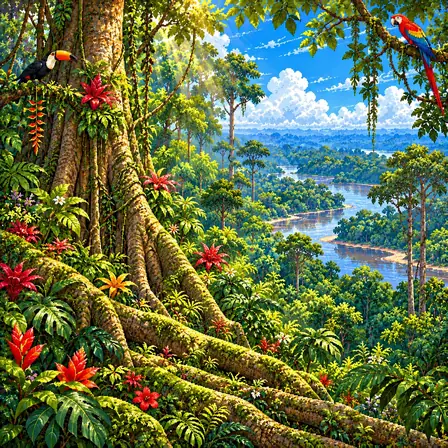
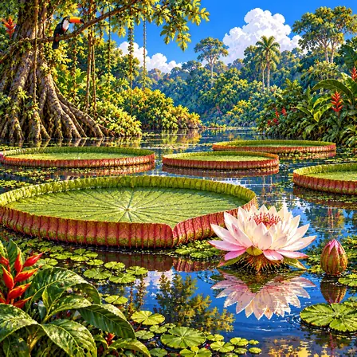
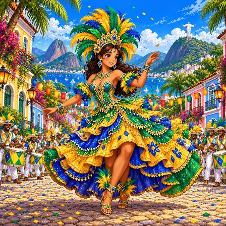
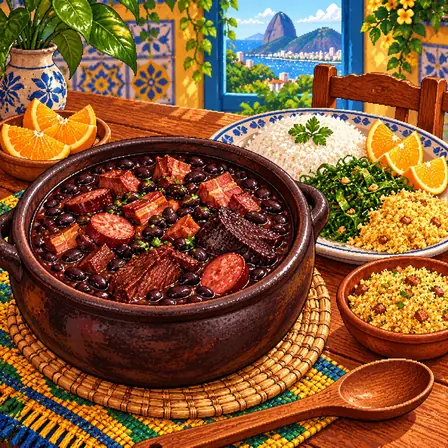

낮고 넓은 아마존 분지
브라질 땅의 41%는 평균 높이가 200m보다 낮아요. 그 대부분은 아마존강과 지류가 흐르는 분지로, 오랫동안 흙과 모래가 쌓여 만들어진 땅이에요.
출처: Library of Congress Country Studies, Brazil: Geology, Geomorphology, and Drainage

브라질 북쪽은 아마존강 둘레의 넓은 열대 숲이에요. 가운데는 풀과 키 작은 나무가 자라는 높은 땅이에요. 동쪽 끝은 비가 적어 메말라요.
브라질 땅의 41%는 높이 200m가 안 되는 낮은 땅이고, 대부분 아마존강 유역이에요. 가운데에는 평균 높이 1,000m의 중앙고원이 있고, 대서양 해안을 따라 산지가 이어져요.
브라질 땅의 41%는 평균 높이가 200m보다 낮아요. 그 대부분은 아마존강과 지류가 흐르는 분지로, 오랫동안 흙과 모래가 쌓여 만들어진 땅이에요.
출처: Library of Congress Country Studies, Brazil: Geology, Geomorphology, and Drainage
가운데의 중앙고원은 평균 높이가 1,000m이고, 풀밭에 키 작은 나무가 드문드문 자라는 열대 초원(세하두)이 넓어요. 비가 적은 북동부에는 가시가 많은 키 작은 숲(카칭가)이 자라요.
출처: Library of Congress Country Studies, Brazil: Geology, Geomorphology, and Drainage · Library of Congress Country Studies, Brazil: Soils and Vegetation · UNESCO, Cerrado Protected Areas: Chapada dos Veadeiros and Emas National Parks
안데스에서 시작한 아마존강은 서쪽에서 동쪽으로 흘러 대서양에 이르러요. 세계 민물의 5분의 1이 아마존 유역을 흐르고, 브라질 안의 3,615km 동안 강물 높이는 100m쯤만 낮아져요.
출처: Library of Congress Country Studies, Brazil: Geology, Geomorphology, and Drainage · UNESCO, Central Amazon Conservation Complex
남동쪽 해안을 따라 세라두마르산맥이 바다 가까이 솟아 있어요. 비가 많은 이 산비탈에는 대서양 숲이라는 열대 우림이 자라고, 산에서 바다까지 숲, 습지, 섬, 모래 언덕이 이어져요.
출처: Library of Congress Country Studies, Brazil: Geology, Geomorphology, and Drainage · UNESCO, Atlantic Forest South-East Reserves
브라질 땅의 36%, 특히 가운데는 아주 오래된 단단한 암석(순상지)으로 되어 있어요. 서쪽의 안데스산맥이 비교적 최근에 솟아오르면서, 서쪽으로 흐르던 아마존강의 방향이 동쪽으로 바뀌었어요.
출처: Library of Congress Country Studies, Brazil: Geology, Geomorphology, and Drainage
북동쪽 해안에서 멀리 떨어진 대서양의 페르난두지노로냐섬들은 바닷속 산줄기의 화산 봉우리가 물 위로 드러난 것이에요. 이곳의 바다 국립공원 넓이는 11,270헥타르예요.
출처: UNESCO, Brazilian Atlantic Islands: Fernando de Noronha and Atol das Rocas Reserves
브라질에서 잘 알려진 도시, 역사유산, 자연, 식물, 문화, 음식, 동물, 인사말, 국기를 한 장씩 그렸어요.

브라질리아는 브라질의 수도예요. 60여 년 전 땅 안쪽 깊은 곳에 새로 지은 도시예요. 하늘에서 보면 도시가 비행기 모양이에요.
브라질리아는 브라질의 계획 수도로 1960년 내륙에 건설됐어요. 건축가 오스카 니에메예르와 도시계획가 루시우 코스타가 협력해 비행기 모양으로 설계했어요. 국회의사당의 쌍둥이 돔, 대통령 궁전, 최고법원 등 현대 건축 걸작들이 모여 있어요. 세워진 지 27년 만인 1987년 유네스코 세계유산에 등재된 드문 사례예요.

오루프레투 역사도시는 산비탈에 있는 오래된 도시예요. 돌길을 따라 옛집과 교회가 모여 있어요. 교회 벽에는 섬세하게 깎은 돌 장식이 있어요.
오루프레투 역사도시는 브라질 남동부의 산비탈에 자리한 옛 도시예요. 18세기 금광 개발과 함께 성장했고, 포르투갈 식민지 시기에 지어진 거리와 건물이 남아 있어요. 굽은 장식과 섬세한 조각이 많은 바로크 양식의 교회가 특징이에요. 그림 속 상프란시스쿠 지 아시스 성당에는 조각하기 좋은 부드러운 돌로 만든 장식이 있어요. 도시의 건축과 예술적 가치를 인정받아 1980년 유네스코 세계문화유산에 등재됐어요.

이과수 폭포는 폭포 275개가 이어진 거대한 폭포 무리예요. 브라질과 아르헨티나 사이에 있어요. 브라질 쪽에서는 폭포 전체를 한눈에 볼 수 있어요.
이과수 폭포는 브라질과 아르헨티나 국경에 걸친 세계 최대 폭포군이에요. 약 1억 3천만 년 전 용암이 넓게 흘러나와 형성된 현무암 절벽을 강물이 깎아 275개의 폭포가 2.7km에 걸쳐 펼쳐졌어요. 브라질 쪽에서 보면 폭포 전체 파노라마를, 아르헨티나 쪽에서 보면 '악마의 목구멍'을 가까이서 볼 수 있어요. 양국 모두 유네스코 세계자연유산이에요.

아마존 열대우림은 세계에서 가장 큰 열대 숲이에요. 그 절반이 넘게 브라질에 있어요. 수많은 동물과 식물이 함께 살아가는 곳이에요.
아마존 열대우림은 세계 최대 열대우림으로 전체의 60%쯤이 브라질에 있어요. 약 3만 9,000종의 식물, 1,300종의 조류, 300만 종의 곤충이 서식해요. 약 400개 원주민 부족이 수천 년간 이 생태계와 공존해왔어요. 숲이 지구 탄소 저장과 강수 순환에 핵심 역할을 하며, 벌채로 숲의 약 20%가 이미 사라져 생태계 위협이 심각해요.

빅토리아 수련은 잎이 아주 큰 물풀이에요. 둥근 잎이 3m까지 자라 물 위에 떠 있어요. 꽃은 밤에 하얗게 피었다가 분홍색으로 바뀌어요.
빅토리아 수련은 브라질 아마존 강 유역에서 볼 수 있는 거대한 수생식물이에요. 둥근 잎이 지름 3m까지 자라 물 위에 떠 있으며, 어린아이가 위에 올라설 수 있을 만큼 튼튼해요. 밤에만 피어나는 크림빛 꽃은 이틀에 걸쳐 분홍색으로 변해요. 아마존의 풍요로운 생태계를 상징하는 식물이에요.

카니발 의상은 깃털과 반짝이로 꾸민 화려한 옷이에요. 사람들은 이 옷을 입고 삼바 음악에 맞춰 춤을 춰요. 리우데자네이루의 카니발에는 엄청나게 많은 사람이 모여요.
삼바 카니발 의상은 브라질 리우 카니발에서 댄서들이 입는 화려한 깃털 옷이에요. 삼바는 아프리카에서 건너온 리듬이 브라질에서 꽃핀 음악과 춤이에요. 카니발 기간에는 삼바 학교라 불리는 팀들이 1년 동안 준비한 의상과 장식 수레로 퍼레이드 경연을 벌여요. 매년 2월 무렵 닷새 동안 열리며 약 200만 명이 거리를 가득 채워요. 수백 명이 한꺼번에 북을 울리는 타악대 바테리아의 연주가 축제의 심장이에요.

페이조아다는 검은콩과 돼지고기를 오래 끓인 요리예요. 쌀밥과 볶은 채소, 오렌지 조각을 곁들여 먹어요. 주말 점심에 가족이 모여 즐겨 먹어요.
페이조아다는 검은콩과 돼지고기 여러 부위를 큰 솥에 넣고 오래 끓인 브라질 대표 콩 요리예요. 포르투갈의 콩 요리법과 아프리카, 원주민의 음식 문화가 어우러져 브라질에서 발전했어요. 4시간 가까이 푹 끓여 국물이 진하고 걸쭉해요. 흰 쌀밥과 볶은 케일, 상큼한 오렌지 조각을 곁들이는데, 오렌지가 기름진 맛을 깔끔하게 씻어줘요. 브라질에서는 보통 수요일과 토요일 점심에 먹는 전통이 있어요.
재규어는 아메리카에서 가장 큰 고양이과 동물이에요. 헤엄을 아주 잘 쳐서 강도 건너요. 무는 힘이 세서 거북 등딱지도 부술 수 있어요.
재규어는 호랑이, 사자 다음으로 큰 고양이과 동물로, 아메리카 대륙에서 가장 큰 맹수예요. 표범과 닮았지만 장미 모양 무늬 안에 점이 더 찍혀 있어 구별할 수 있어요. 고양이과답지 않게 헤엄을 잘 쳐서 강을 건너고 물속 먹이도 잡아요. 몸집에 비해 무는 힘이 고양이과에서 가장 강해 단단한 거북 등딱지도 부술 수 있어요. 아마존 열대우림의 최상위 포식자이며, 숲이 줄면서 보호가 필요한 준위협종이 됐어요.
올라(Olá)는 포르투갈어로 '안녕'이에요. 친구끼리는 짧게 '오이!'라고 해요. 브라질은 남아메리카에서 포르투갈어를 쓰는 유일한 나라예요.
Olá!는 '올라'라고 읽는 포르투갈어 인사말이에요. 친구끼리는 더 짧고 친근하게 '오이(Oi)!'라고 해요. 브라질은 남아메리카에서 유일하게 포르투갈어를 쓰는 나라예요. 인구가 2억 명이 넘어, 포르투갈어를 쓰는 사람의 대부분이 브라질에 살아요. 브라질 포르투갈어는 모음을 길고 부드럽게 발음해 노래처럼 들린다는 말을 들어요.

브라질 국기는 초록 바탕에 노란 마름모가 있어요. 가운데 파란 원 안에는 별 27개가 있어요. 별들은 진짜 밤하늘의 별자리를 옮겨 그린 거예요.
브라질 국기는 초록 바탕에 노란 마름모, 그 안에 별이 가득한 파란 원이 있는 디자인이에요. 파란 원에는 '질서와 진보'라는 글귀 띠와 흰 별 27개가 그려져 있어요. 별 27개는 브라질의 26개 주와 수도를 나타내요. 별들의 배치는 1889년 11월 15일 리우데자네이루 하늘의 실제 별자리 모습을 그대로 옮긴 것이에요. 남십자성 등 진짜 별자리를 국기에서 찾아볼 수 있는 특별한 국기예요.